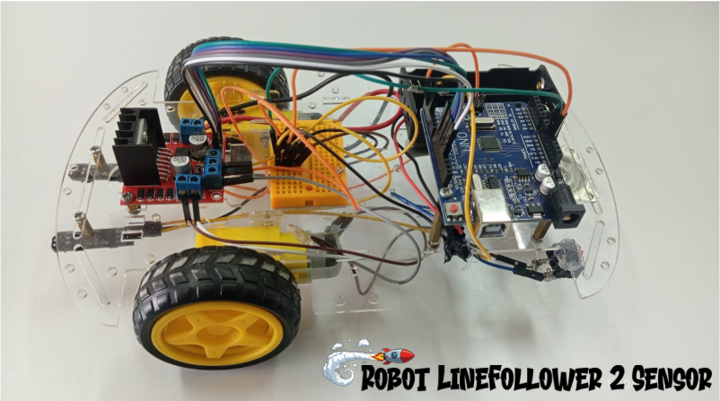

Service Details
Embedded System Development
Mengerjakan project robot line follower berbasis mikrokontroler yang mampu mengikuti jalur secara otomatis menggunakan sensor. Project ini menggabungkan konsep embedded system, pemrograman, dan kontrol sistem untuk menghasilkan pergerakan robot yang stabil dan responsif.

What You Get
Robot Line Follower
Pengembangan robot yang mampu mengikuti jalur secara otomatis menggunakan sensor, dengan sistem kontrol yang dirancang agar stabil dan responsif.
Responsive System Control
Sistem dirancang agar mampu merespon perubahan jalur dengan cepat melalui pembacaan sensor dan pengolahan data secara real-time.
Sensor Integration
Mengintegrasikan sensor untuk mendeteksi jalur dan lingkungan sekitar sebagai dasar pengambilan keputusan pada sistem robot.
Motor Control System
Mengontrol pergerakan motor pada robot agar dapat berjalan stabil dan mengikuti jalur dengan presisi.
Development Workflow
Strategy & Planning
Project ini berfokus pada perancangan dan pengembangan robot line follower yang mampu mengikuti jalur secara otomatis menggunakan sensor inframerah. Sistem dirancang dengan perencanaan strategi kontrol, penempatan sensor, serta logika pemrograman agar robot dapat bergerak stabil, akurat, dan responsif terhadap perubahan lintasan.
1 weekDesign & Prototyping
Pada tahap ini dilakukan perancangan desain robot line follower mulai dari layout rangka, penempatan sensor inframerah, motor DC, dan mikrokontroler. Prototipe dirakit untuk memastikan semua komponen bekerja dengan baik dan mampu mengikuti jalur sesuai perencanaan sistem.
1-2 weeksDevelopment & Testing
Pada tahap development dilakukan implementasi program pada mikrokontroler untuk mengontrol pergerakan robot line follower berdasarkan input sensor inframerah. Selanjutnya dilakukan pengujian untuk memastikan robot mampu mengikuti garis dengan stabil, melakukan koreksi arah secara otomatis, dan merespon perubahan jalur dengan akurat.
2-3 weeksLaunch & Optimization
Pada tahap ini robot line follower diuji pada kondisi lintasan sebenarnya untuk memastikan performa berjalan sesuai harapan. Dilakukan proses optimasi pada sensitivitas sensor, kecepatan motor, dan algoritma kontrol agar robot dapat berjalan lebih stabil, cepat, dan akurat dalam mengikuti garis.
1 week"“Kesuksesan tidak datang secara instan, tetapi melalui proses belajar, kegagalan, dan konsistensi. Terus berkembang, tetap fokus, dan jangan berhenti sampai kamu mencapai tujuanmu.”

Muhammad Reki
Developer, Politeknik Pertanian Negeri Payakumbuh